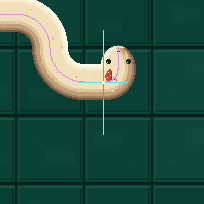

Renderer edece22 не изменён. Exact U: α=2/11, sample=(903.472727,306), d=2.213636. До головы по canonical body-distance: 26.8909 px. Прежние 45 px состоят из 36 local BODY + 9 leading CAP, а не из 45 px локальной толщины.
Purple: centerlineCyan: sampled primitive/tangentYellow: normalWhite: sample point

A green: intended local sectionB blue: other body branch (none here)C pink: leading cap
Наведите на цветную normal-scan колонку: class / retained d / nearest d. Все 45 пикселей и их body-distance.
| Метрика | Результат |
|---|---|
| Точное локальное сечение | 36 px |
| Глобальный непрерывный span той же normal | 45 px = A36 + C9 |
| BODY после cap-transition, 96 sampled frames | 36–36 px; failures 0 |
| Локальная d-neighbourhood | CELL/8 = 8.5 px |
| HEAD/CAP transition domain | −24…+42 px от head endpoint; не BODY-gate |
| Параллельные ветви: centerline / clearance | 68 / 32 px · canonical long-leg U validation fixture |
| Пиксели перекрытия nonlocal ветвей исходного tight U | 0 · 12 alpha phases · ближайшие к голове 200×280 px |
| Targeted validator tests | 5 PASS: false-positive, real 44px defect, missing pixels, branch overlap, cap radius continuity |
У исходного очень короткого U нет двух перекрывающихся прямых параллельных участков: противоположная короткая ветвь полностью округлена. Поэтому 32 px проверены на отдельном canonical U с длинными параллельными ветвями; для исходного U отдельно проверено отсутствие nonlocal pixel overlap. Соединяющий разворот не считается «другой ветвью».
Option A: границы принадлежат одному local d-band; пиксели могут быть покрыты local field даже когда окончательный material owner выбран из cap. Слепое исключение всех cap-owned pixels внутри BODY создало бы ложное сужение. Полный global span сохраняется как отдельная метрика.
FALSE POSITIVE для BODY-width. V4 проходит этот targeted geometry gate. Это не human art approval для формы cap и не acceptance в gameplay. Нет geometry/material/head/interpolation изменений, integration, benchmark, full regression или deploy. STOP.